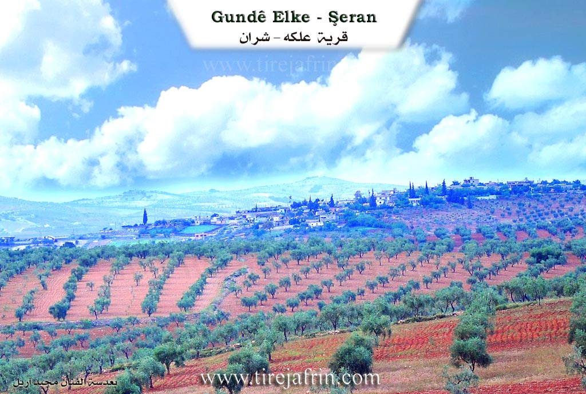

General Information
Nahiya (Subdistrict)
Şera
Also Known As
Elkê, Haloubi Small, حلوبي صغير, عَلكه, Ḥilûbiyê, حلوبيه جوجك, عالكه, Alkê, Sebra
Tribes
Ce'bûlan, Ecîl, Hemkelekwan, Şikak
Families, Clans, etc.
Bapîr Kîbar, Bapîr Xweşê, Beytoz, Birukê Mihemed, Cebûla, Cibûlî, Ebû Cem'a, El-Canû, Elî Hemdûş, Halebî, Hecî Gundî, Helîko, Hemkelekê, Hemo Kolak, Hesbeşka, Hûrê, Kolkî, Osman Cano, Reşê Cimo, Reşîd Horî, Teter, Xemîs
Photos


Basic Information about Ĥilûbiyê Çuçik
Source: Ax û Welat
Etymology: Derived from an ancestor named Elîyê Memê, locally called Elik, evolving into Alkê; later renamed Sebra after three local martyrs
Old Names: Elik
Springs: Qerecurnê
Shrines: Qerecurnê, Dara Bêxweş
Trees: Dara Bêxweş, Darê çinarê
Wells: Curnê Otmên
Other Landmarks: Geliya Zûwl
Source: Afrin 366
Etymology: Named after a founder or original inhabitant named Alke
Hills: Qeregul
Ruins: Anob, Helîko
Other Landmarks: Meydankê, Gemrûk, Semolkê, Qertqulaq, Xeleq
Summaries
I. Summary from TirejAfrin Site (English) of Ĥilûbiyê Çuçik
Source: https://www.tirejafrin.com/site/kura%20afrin%20%20sheran%20-%20halui%20s.htm
It is stated in the book Çiyayê Kurmênc (Efrîn): A Geographical Study that the name Helebiyê implies "rising and standing" according to the Ferhenga Koranî. However, the account of the village residents states that the village name is a compound of two words: "Hilew," which is an Arabic word for beauty, and "Bî," which is the name of the willow tree in Kurdish. Large and beautiful willow trees (darên bî) still exist at the archaeological site of Girê Helebiyê located next to the village, and the village and its location were known by them. They are two villages.
Helebiyê Biçûk (Little Helebiyê) (369 inhabitants / 425m altitude) is a small village located beside Bendava Meydankê (Meydankê Dam) on its southern side.
According to the book Efrîn... Her River and Her Green Hills, Helebiyê Biçûk is a village in Çiyayê Kurmênc following the sub district of Şera, area of Efrîn, province of Heleb (538 inhabitants). It is a small village situated on a mountainous rise and slope. It is bordered to the north by a slope, a mountain chain, the valley of the Kaniya Qere Curnê spring, a broad and fertile plain, and the village of Helebiyê Mezin. To the south, it is bordered by a slope, a valley planted with olive trees, and the village of Qurtqulaq Mezin (Ed Dîb El Kebîr). To the east lies a high mountain chain planted with forest trees, the Riya Meydankê-Kefercenê-Bilbilê (Meydankê Kefercenê Bilbilê road), and the villages of Metîna and Meşelê. To the west, there is a slope, an agriculturally fertile valley, a mountainous height, and the village of Kefer Rûm.
The number of houses reaches about 50, and the age of the village is approximately 250 years. Its old houses are made of stone and mud with flat wooden roofs, while the modern ones are of cement and stone spread along the public road. The road connecting to the village is paved earth. An electricity network is available, and drinking water comes from pools and artesian wells. There is a primary school and a modern technical olive press located at the junction of Ziyareta Qere Curnê. The residents work in the cultivation of olives, vines, walnuts, and almonds, as well as sheep rearing. It is a village surrounded by olive trees and forest trees from all sides.
The village Mukhtar is Rifet Hemo.
Sources of Information:
- Book: جبل الكرد (عفرين) دراسة جغرافية Çiyayê Kurmênc (Efrîn): A Geographical Study by د. محمد عبدو علي Dr. Mihemed Ebdo Elî.
- Book: عفرين .... نهرها وروابيها الخضراء Efrîn... Her River and Her Green Hills by عبدالرحمن محمد Ebdulrehman Mihemed from the village of Qetme.
- Studies of Navenda Tirej Soft / Ebdulrehman Hacî Osman.
- Some residents of the villages.
Preparation and execution: Manager of the Tirej Efrîn site, Ebdulrehman Hacî Osman, 20/12/2013.
II. Summary of Ĥilûbiyê Çuçik from Ax û Welat
Source: https://www.youtube.com/watch?v=2cSSJUaYJBw
History and Origins
The village of Alkê, located in the Şera district of Efrîn, traces its name to a specific ancestor named Elîyê Memê. According to village elders like Apê Henîf, the founder was locally known as Elik, which evolved into the village name Alkê. During the period of Arabization policies, the government officially renamed the village Hilûbiyê Sexîr, distinguishing it from the neighboring Hilûbiyê Kebîr. However, following the start of the Rojava revolution, the village adopted the name Sebra to honor the memory of three martyrs, Ebdo, Welat, and Hîra, who died together during the battles at Qestel Cindo in 2013. A fourth martyr from the village, Zînda, fell during the resistance in Kobanê.
Social Structure and Migration
The village social structure is founded upon five primary families: Hesbeşka, Hemkelekê, Reşê Cimo, Cebûla, and Hûrê. The Hesbeşka family is noted as one of the first to establish themselves there. Over time, the population grew to approximately 70 or 80 households, with around 500 residents living in about 110 houses. Migration has impacted the community, with many residents moving to Europe, particularly Germany. However, some residents expressed a lack of inner peace, or sebra, while abroad and chose to return to their ancestral land. The community is organized under a local commune named the Şehîd Ebdo Commune, which manages social disputes and aid, continuing the traditional role once held by village elders and figures like Reşê Cimo.
Sacred Sites and Landmarks
The village is home to significant spiritual landmarks. The most prominent is Qerecurnê, a site located at the bottom of the village that functions as both a spring and a shrine. Local oral history recounts that a Êzîdî soldier named Hogir, originally from Endarê, served under Imededdîn Zengî. He was killed and buried at this spot. The site contains a black basin, or curn, which gave the place its name. Historically, locals would sacrifice black chickens here on Wednesday mornings before sunrise to heal the sick. The Baathist regime attempted to erase this local history by building a restaurant and renaming the shrine Şêx Mihemed Rihawî, but the villagers rejected this imposition.
Another sacred feature is the Dara Bêxweş, an oak tree believed to have healing properties where locals tie fabrics to make wishes. There are also sacred Darê çinarê, or plane trees, near the Qerecurnê spring which are strictly forbidden from being cut down. To the south lies an old well known as Curnê Otmên, and to the north is the valley of Geliya Zûwl.
Notable Figures and Culture
The village is known for its olive production, with residents like Nazlî preserving traditional methods of preparing cracked and sweetened olives for winter provisions. Culturally, the village is the home of the intellectual and artist known as Bavê Hêja. A poet, painter, and writer born in 1948, Bavê Hêja was a close associate of the renowned poet Cegerxwîn, whom he met during his military service in Şam. Bavê Hêja produced significant works including a handwritten Alfabeya Kurdî in 1994, translations of books such as Bihişta Azadî and Cinûna Sêf, and paintings depicting historical figures like Diyako. His work reflects a deep commitment to Kurdish culture and history despite political pressure.
II. Summary of Ĥilûbiyê Çuçik from Afrin 366
Source: https://www.youtube.com/watch?v=td5344tm1_s
The village of 'Elke (also referred to as Alke) is situated in a picturesque location overlooking the Meydankê dam and lake in the Şehra (Sharran) sub-district of Afrin. While the host initially expresses uncertainty about its administrative affiliation, briefly mentioning Mêbata and Raco, the village is firmly placed within the geography of Şehra, bordered by landmarks such as Gemrûk, Semolkê, and Gundê Şurbe. The area is known for its lush nature, which the host describes as resembling a sea due to the expansive waters of the dam below.
According to a village elder, the history of 'Elke begins with a single founding figure named Alke, after whom the settlement was named. The village has shifted its physical location over time; the elder notes that the community moved from an older site to the current location as it expanded. Remnants of this history are alluded to, such as a "hewşek kevnar" (ancient courtyard). The social structure of the village is historically divided into two main lineage groups or clans (referred to as "ayla"): the Ce'bûlan and the Hemkelekwan.
The village is home to approximately 110 to 125 households. The documentary highlights several specific families, including El-Canû (also referred to as Ebû Cem'a), Beytoz, Hecî Gundî, Bapîr Xweşê, Bapîr Kîbar, Halebî, Birukê Mihemed, Kolkî, and Teter. Migration has affected the demographic, with the elder mentioning family members living in Aleppo and Istanbul, while others remain to tend the land. The host visits the empty home of Idrîs and the active household of Luqman, observing the olive harvest and the pressing of oil.
The geography around 'Elke is defined by the receding waters of the Meydankê lake, which has revealed previously submerged areas or ruins known as Anob and Helîko. To the heights, a hill or mountain named Qeregul overlooks the settlement. The village is agriculturally active, relying on olives and pomegranates. A notable feature of modern life in 'Elke is the use of solar panels ("lewah şemsî") to power wells ("bîr") and fill irrigation pools, allowing farmers to water their orchards efficiently without fuel costs. The host expresses great admiration for this self-sufficiency and the scenic beauty where the water from Gemrûk meets the lands of 'Elke.
II. Summary of Ĥilûbiyê Çuçik from Multi Channel
Halobî Biçûk, originally known as Elekî, is a picturesque village located in the Efrîn region within the Şera district. The settlement was established around 200 years ago in an area that was previously heavily forested with pine and oak trees. The village owes its foundation and its original name to Elo, an agricultural worker for a man named Hemo Kolak. Hemo Kolak was originally from the nearby Xirbet Şeran. He sent Elo to the site to clear the land and farm, where Elo initially lived in a local cave. As the farm grew, the settlement became known as Elekî in his honor. Eventually, Hemo Kolak relocated there himself, building a massive stone house. His sons Oseb and Xelîl continued the lineage. Oseb later moved to Merestê Xetîb past Kefercenê, while Xelîl remained in Halobî Biçûk, raising six children who formed the core of the local population.
The original founders belonged to the Kurdish Şikak tribe. Not long after, an Arab family from the Ecîl tribe, the Xemîs family, arrived from Qelata Ceber with their flocks of sheep. Seeking good pastures, they found the Kurdish residents welcoming and decided to stay. The two groups have coexisted peacefully for two centuries, though they maintain separate lineages without intermarriage. Over the years, other families moved to the village, expanding its size. These included Elî Hemdûş from Kefercenê, the Cibûlî family who settled in the eastern sector, the Reşîd Horî family, and the Osman Cano family.
Agriculture is the lifeblood of Halobî Biçûk, which boasts over 33000 olive trees. Historically, the village maintained strong communal traditions around processing crops. Villagers used an animal powered stone mill to grind bulgur wheat in the central square. Families would gather day and night to boil wheat in large cauldrons, transforming the labor into festive gatherings complete with singing and feasts of roasted chicken and vegetables. The villagers also share unique local culinary traditions, such as preparing a wild plant called lof, which must be boiled multiple times with sumac and lemon salt to remove its natural toxins.
Today, the village is surrounded by neighboring settlements like Halobî Mezin, Koblê, Qurtqelaq, Keferrom, and Matenlî. A major nearby landmark is the Meydankê dam, which submerged older watermills at Qîbar that the locals previously used. In recent times, the demographic of the village has shifted significantly. Halobî Biçûk now hosts many displaced Arab families from Hims, Idlib, and Meryûda, who currently make up more than a third of the population. Despite the difficult economic conditions, the village remains a place of peaceful coexistence where old traditions endure.
Transcriptions and Subtitles
| Source | Video | Subtitles | Transcript |
|---|---|---|---|
| Afrin 366 1 | Watch Video | Download SRT | View Transcript |
| Ax û Welat 1 | Watch Video | Download SRT | View Transcript |
| Multi Channel 1 | Watch Video | Download SRT | View Transcript |
Possible Village Name Meaning of Ĥilûbiyê Çuçik
"Halubiya" means "gentle and upright". Residents say the name comes from "Halu" (Arabic for beauty) and "Bî" (Kurdish for willow tree).
Source: TirejAfrin Site